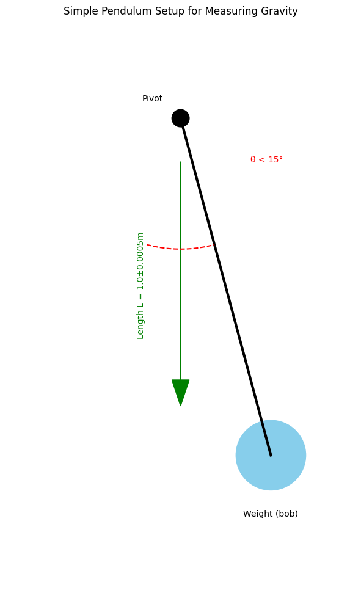

Problem 1
🌍 Measuring Earth's Gravity with a DIY Pendulum
📝 Materials Checklist
- 🧵 String (1-1.5m long)
- ⚖️ Weight (keys, small bag of sugar, or anything dense)
- ⏱️ Stopwatch (phone works fine)
- 📏 Ruler/measuring tape
🔧 Setup (2 Minutes)
- Tie weight to string
- Measure length (L) from pivot to weight's center
- 📐 Uncertainty: If your ruler has 1mm marks, ΔL = ±0.5mm
- Hang from a fixed point (doorframe, ceiling hook)
 (Keep angles <15° for accurate results!)
⏳ Data Collection
- Time 10 swings (back-and-forth = 1 swing)
- Repeat 10 times (reduces timing errors)
📊 Example Data Table
| Trial | Time for 10 swings (s) |
|---|---|
| 1 | 14.21 |
| 2 | 14.18 |
| ... | ... |
| 10 | 14.25 |
Calculations:
- Mean time (T₁₀): Average of all trials
- Standard deviation (σ): Measures your timing consistency
- Uncertainty (ΔT₁₀): σ/√10
🧮 The Math (Simplified)
1. Period (T) per swing
$$ T = \frac{T_{10}}{10} $$
(Example: 14.2s/10 = 1.42s)
2. Gravity Formula
\[ g = \frac{4\pi^2 L}{T^2} \]
Example:
- L = 1.00m ±0.0005m
- T = 1.42s ±0.01s
→ g ≈ 9.82 m/s²
3. Uncertainty Propagation
\[ \frac{\Delta g}{g} = \sqrt{\left(\frac{\Delta L}{L}\right)^2 + \left(2\frac{\Delta T}{T}\right)^2} \]
(This accounts for errors in both length and timing!)
📉 Expected Results vs Reality
| Location | Standard g (m/s²) | Your Measurement |
|---|---|---|
| Sea Level | 9.81 | [Your Value] |
| High Altitude | ~9.78 |
Key Insight:
- Your result should be within ±0.1 m/s² of 9.81 if done carefully!
🔍 Error Analysis
Major Error Sources
- Angle >15° → Formula breaks down
- String stretch → Changes effective L
- Air resistance → Slows pendulum slightly
- Timing reflexes → Human reaction time (~0.2s error)
Pro Tip: Use video + frame counting for better timing!
-